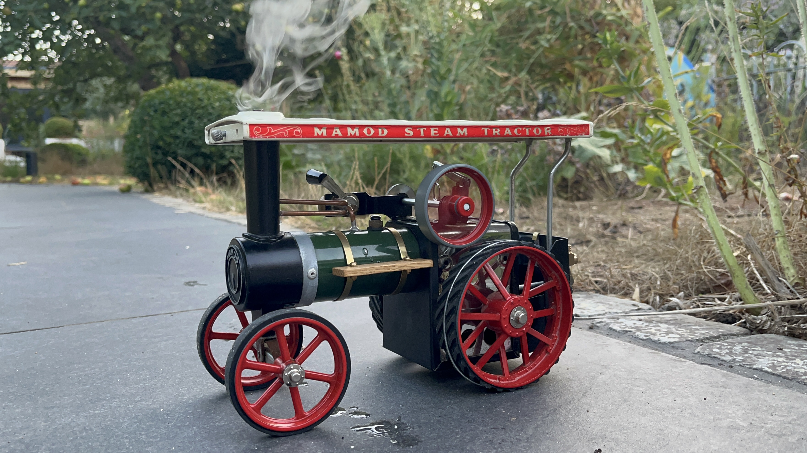

Mamod Project

This Mamod Steam engine was bought as a present for my Dad's 11th birthday by his parents. He kept it running and has handed it down to me to continue running it.
Maintenance
Over the years, little maintenance had been completed on the engine as it was very rarely used. After getting it into my possession, I have been repairing small parts and have bought some accessories. It was only recently that the waterglass failed and I had to replace it. I had 2 failed attempts until it now works perfectly. The rivets were too small to for the hole so i had to widen the hole slightly and use larger rivets. It now works as desired.